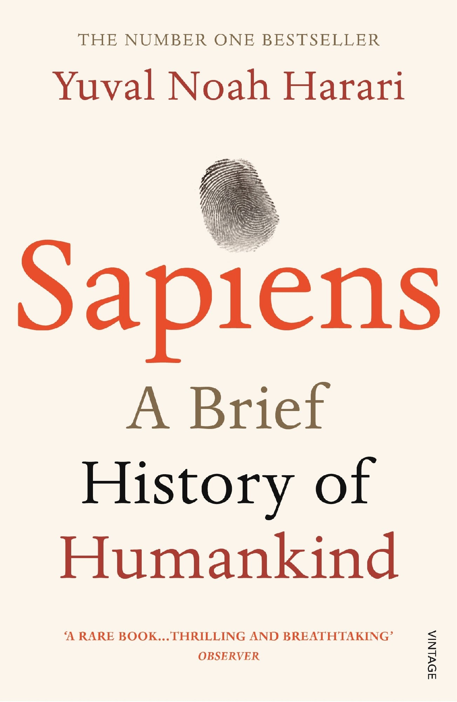

Library › Psychology & People
Sapiens — Summary & Key Lessons

A brief history of humankind — how a mid-tier ape conquered Earth with gossip, myths, money, and science.
📖 OPEN THE FULL INTERACTIVE BREAKDOWN →🌐 Read it in Hindi, Hinglish, Gujarati, Tamil & 22 more languages — free, with audio.
💡 The Big Idea
70,000 years ago, Homo sapiens was an unremarkable animal in a corner of Africa. Harari traces the three revolutions that changed everything: Cognitive (language capable of fiction — gods, nations, money, corporations are all shared myths that let millions of strangers cooperate), Agricultural ('history's biggest fraud' — wheat domesticated us, trading foraging freedom for drudgery and hierarchy), and Scientific (the discovery of ignorance — admitting 'we don't know' unleashed 500 years of exponential power). The unsettling thread: our power grew far faster than our wisdom or happiness — we became gods without ever settling what we want.
🧠 The 6 Key Lessons
Lesson 1: The Cognitive Revolution: Fiction Is Our Superpower
Part 1: The Cognitive Revolution
Many animals communicate; only Sapiens can talk about things that don't exist. This 'fiction faculty' — born around 70,000 years ago — is the master key to human dominance: chimps cooperate in bands of dozens (limited by personal acquaintance), while humans cooperate in millions because we believe the SAME stories: tribal spirits, nations, human rights, Google. None of these exist in physical reality — you can't point at 'France' or dissect a 'corporation' — yet shared belief in them coordinates strangers at planetary scale. Gossip built trust in bands up to ~150 people (Dunbar's number); beyond that, only myth scales. Every large human institution you'll ever join runs on this software.
📖 Example: Harari's Peugeot example: the company isn't its cars (destroy them all, Peugeot survives), its factories, or its people (replace them all, Peugeot persists). It's a 'legal fiction' conjured by lawyer-priests through incorporation rituals — and this ghost… Read the full example →
⚡ Do this: List the five biggest fictions organizing your life (company, nation, currency, degree, brand). For each, ask: does believing this serve me — and where am I mistaking the story for physical reality?
Lesson 2: The Agricultural Revolution: History's Biggest Fraud
Part 2: The Agricultural Revolution
The standard story says farming was progress. Harari's revision: average foragers worked fewer hours, ate more varied diets, and suffered fewer infectious diseases than the peasants who replaced them. Wheat 'domesticated' Sapiens: we cleared land for it, hauled water for it, guarded it, and bent our spines over it — in exchange for a worse individual life but MORE total humans (population boom on cheap calories). The trap's mechanism matters most: each small step (a bit more planting, a few more children) made sense, and by the time the deal soured, there was no going back — populations couldn't re-forage. Harari's law: 'luxuries tend to become necessities and to spawn new obligations.'
📖 Example: The luxury trap, ancient and modern: once, letters took weeks and got thoughtful replies; email promised effortless speed — and now you answer dozens daily, anxious within hours. The labor-saving device created the labor. Same for the bigger house (bigger… Read the full example →
⚡ Do this: Find your wheat: name one 'upgrade' from the past two years that quietly became a treadmill (subscription, gadget, lifestyle bump). Reverse ONE luxury-turned-obligation this month, and next upgrade, ask first: what new obligations will this spawn?
Lesson 3: Imagined Orders and the Myths That Bind
Part 2: Building Pyramids / There Is No Justice in History
Every large society runs on an 'imagined order' — a myth so deeply believed it feels like nature: Hammurabi's code declared hierarchy divine; the American Declaration declared equality self-evident; both are fictions, neither is biologically true, and both organized millions. The orders survive because they're embedded in everything (architecture, desires, laws), because we're born inside them (romantic consumerism feels like YOUR wishes — vacations and gadgets are its scripture), and because escaping one imagined order always lands you in another. The hierarchy lesson cuts deep: most historical pecking orders (race, caste, gender) were accidents amplified by feedback loops — 'unjust discrimination often gets worse, not better, over time.'
📖 Example: Harari's thought experiment: Hammurabi and Thomas Jefferson would each call the other's social order absurd fantasy — superior/commoner/slave versus all men created equal. A modern reader recoils at Babylon's code, yet 'human rights' exist exactly as much as… Read the full example →
⚡ Do this: Interrogate one 'natural' desire this week (the house, the trip, the title): whose myth planted it — and would you still want it on a desert island? Keep it if yes; question the budget if no.
Lesson 4: Money, Empire, Religion: The Three Unifiers
Part 3: The Unification of Humankind
History's arrow points toward unification, driven by three universal orders. MONEY: the most successful story ever told — the only myth everyone believes (Osama bin Laden hated American politics and religion but was fine with American dollars); it works purely on mutual trust, converting anything into anything, enabling strangers who'd kill each other to trade. EMPIRE: history's most successful political form — brutal in creation yet responsible for spreading most of the culture, law, and language humans now share (the very ideas used to condemn empire arrived via empire). RELIGION/IDEOLOGY: superhuman orders that legitimize everything else — including the modern ones that deny being religions (liberalism, nationalism, capitalism — each with its dogmas, rituals, and heresies).
📖 Example: Money's magic trick, per Harari: cowrie shells, gold coins, and digital bits share no intrinsic value — a gold coin is useless to eat or wear. Yet when a Roman denarius circulated in Indian markets that Rome never conquered, humanity had its first truly… Read the full example →
⚡ Do this: Audit money's reach in your life: name two things you currently 'buy' that previous generations got through community (childcare, celebration, care of elders). Deliberately de-monetize one exchange this month — trade favors, not fees.
Lesson 5: The Scientific Revolution: The Discovery of Ignorance
Part 4: The Discovery of Ignorance
Modern science's founding act wasn't a discovery — it was an admission: WE DON'T KNOW. Premodern traditions assumed everything important was already known (in scriptures, in the ancients); modern science institutionalized ignorance, married math to observation, and — crucially — wed itself to empire and capital: exploration and conquest funded research, research empowered conquest. The feedback loop (science → power → resources → more science) built the modern world in a mere 500 years. Its engine is credit: the belief, unprecedented in history, that the future will be BIGGER than the present — trust in growth is modernity's real religion, and every loan is a bet on tomorrow's expanded pie.
📖 Example: Harari's contrast: when Columbus sailed, maps showed a full, known world — his 'India' error came from certainty. Amerigo Vespucci's maps did something revolutionary: they left blank spaces — cartographic confessions of ignorance that invited filling.… Read the full example →
⚡ Do this: Institutionalize your own ignorance: write the three most important questions in your field/life you can't answer, and dedicate one hour a week to attacking one — blank spaces on the map are where the growth is.
Lesson 6: Were We Better Off? The Happiness Question
Part 4: And They Lived Happily Ever After
History's most neglected question: did all this power make us happier? Harari's audit is uncomfortable: happiness tracks expectations more than conditions (mass media manufactures global comparison, so a medieval peasant satisfied with clean bread may beat a modern professional dissatisfied beside billionaires); biology caps mood via a hedonic thermostat (lottery winners and accident victims converge back to baseline); and family/community — the strongest happiness predictors — are precisely what modern states and markets dissolved while liberating individuals. Meanwhile the species' 'success' (more humans, more power) was paid for by individuals (peasants, factory workers) and, most brutally, by the billions of industrially farmed animals Harari calls history's greatest crime. Power ≠ wellbeing; the equation was never checked.
📖 Example: The dual audit: measured in DNA copies and energy harnessed, the Agricultural and Industrial Revolutions were triumphs. Measured in the lived experience of a 12-hour-shift millworker versus a forager's varied day, or a caged sow versus a wild boar, the graph… Read the full example →
⚡ Do this: Run the personal version: list your five biggest 'upgrades' of the decade and honestly score each on delivered wellbeing (not status, not convenience — felt life quality). Reinvest in whatever scored highest; that's YOUR data overriding the myth of more.
✅ 5-Step Action Plan
- Map the five fictions running your life — use them, don't be used.
- Escape one luxury trap; interrogate the next upgrade before buying.
- De-monetize one exchange; rebuild one community tie.
- Write your three great unknowns and attack one weekly.
- Score progress in felt wellbeing, not power — then rebalance.
⚠️ When This Doesn't Work
Harari's grand relativism is intellectually thrilling and practically useless unless you anchor it. If every story is a fiction, why believe in your own company's mission, your marriage, your country? The book can slide into cynicism that paralyses action. Read it as a tool for understanding — not as permission to treat every commitment as a lie you're allowed to abandon.
💀 The Graveyard Proves It
🗿 Easter Island — They Cut Down the Last Tree. Burn: An entire civilization's future. Read the full case study →
💬 Best Quotes from Sapiens
- “You could never convince a monkey to give you a banana by promising him limitless bananas after death in monkey heaven.”
- “The Agricultural Revolution was history's biggest fraud.”
- “We did not domesticate wheat. Wheat domesticated us.”
Interactive version: mark lessons as read, listen in your language, share quote cards.